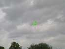
Brie, je ne viens pas de loin alors j'arrive un peu tard le matin, mais avant tout, je sors quand même un cerf-volant !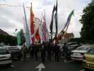
Comme sur bien des festivals, nous nous lançons dans une grande parade en ville. Sauf que là, elle est improvisée et non-approuvée par la Préfecture de Police (entre autres...) !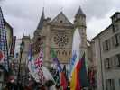
L'Eglise St-Etienne, en 1349, accueillit le mariage de Philippe VI de Valois avec Blanche de Navarre, et maintenant nous....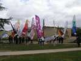
Puis nous investissons le château du XII° siècle, d'un bel aspect extérieur grâce aux rénovations successives et dont les douves sont toujours en eau...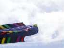
Après le déjeuner offert, on sort le matos. Les Sens Cielois plantent pour la journée une grande anguille directement sortie du catalogue allemand en plein milieu du terrain...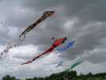
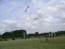
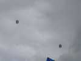
Là-haut, deux beaux cellulaires cylindriques domineront le débat en altitude toute la journée...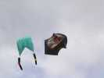
Le graphiste de Sens a décoré ce Rokkaku spécial (il a un arrondi devant) d'une dame très suggestive...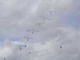
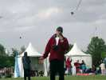
C'est Bruno Koson, avec sa verve et sa mémoire impressionnante qui commentera et essaiera de mettre un peu d'ordre dans les choses... Le micro est défaillant et le son haché dès qu'il s'éloigne, comme sur les 4 derniers festivals où je suis allé, les ingénieurs du son sont bons pour nous assourdir, mais faire marcher correctement un micro, ça c'est impossible...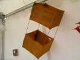
Dominique est tout content, il a réussi à trouver un Gibson Girl, alors que l'armée américaine interdit maintenant la vente de ce matériel militaire (d'une haute valeur stratégique !)...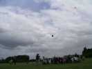
Largage de bonbons, on voit les papillotes (quel luxe !) qui freinent la chute en l'air...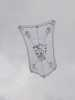
Un cerf-volant à l'armature nouvelle qui vole très bien malgré la turbulence ambiante. La décoration est un peu spéciale, quand on vous explique...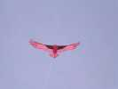
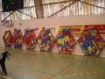
Au soir, repli dans le gymnase pour un pot, dîner et plus si affinités ! Les cervolistes ont apporté leurs oeuvres pour décorer, comme ce zoo stylisé...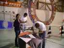
Hugo, Audrey, Thierry et d'autres se jettent sur la roue de Claude Bova et coupent toutes les ficelles ! C'est pour une bonne cause, ils vont changer toutes les toiles. Ils se coucheront tard, et n'auront fait que la moitié du boulot, c'est pas rien, une roue !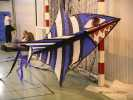
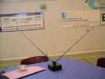
Il y en a même qui volent... Ce petit socle n'est pas une antenne TV d'intérieur. Il est rotatif et entraîne de minuscules cerfs-volants de papier et bambou que j'ai déjà vu voler dehors...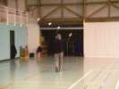
Rare en indoor, un train de cerfs-volants, petits, mais brillants...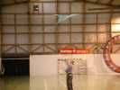
J'ai volé aussi avec ma raie Manta, et Michel s'y est essayé avec un plein succès... et plaisir m'a-t-il semblé...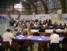
Bon, le moment est venu, les tables sont dressées, on mange, mais surtout on discute, on se montre des trucs, de la doc, on discute des dates, on dit du mal des organisateurs (...des autres festivals), Bruno Tondellier imprime et distribue des photos, on dessine sur les nappes...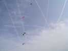
Dimanche matin, ça repart, les cerfs-volants et les avions qui passent au-dessus pour des destinations plus lointaines... en laissant des traces de leur passage dans le ciel varié...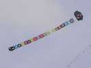
Beau aussi, un Faga Genki (je ne sais jamais...) décoré d'un CD, et avec toutes les pochettes de rangement dans la queue très colorée...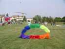
Un bol très spécial aussi, assemblage de manches profondes, mais qui manque encore un peu de vent à cette heure !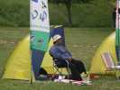
Le CVCF est présent, en particulier le très actif club de Vaux-Le-Pesnil et ses bannières...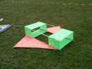
La fête du CVCF (30ème anniversaire !) se rapproche et les "Madiot CVCF" divers naissent de tous côtés...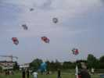
Je vous avais dit que le zoo pouvait voler, c'est fait ! Evidemment, il faut se mettre à plusieurs...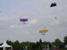
Les normands attaquent encore, leurs drakkars ont même pris l'air...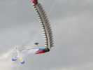
Je ne suis pas le seul oiseau, une belle mouette vole devant une énorme pile d'oreillers empilés et gonflés !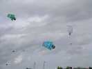
C'est le jour de la navigation, les caravelles ont pris leur envol elles aussi... pour l'Amérique ?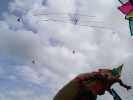
Les pilotables sont là aussi, comme les Impossible et les Tame Bird. Ils se feront un petit méga-team pour le plaisir...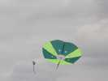
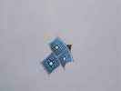
Le Kimono est toujours un beau cerf-volant, et qui vole bien. Celui-ci, décoré façon Vasarely, y ajoute une touche esthétique sobre et bienvenue...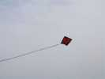
Sobre aussi ce carré (delta ?) à la longue longue queue, rouge et noir...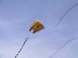
Ce flow-form nounours a une construction spéciale : un jonc transversal a été ajouté, qui se recourbe de chaque côté pour former les oreilles de la bête...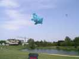
Dans la turbulence, cet énorme nounours est largement bercé : le piquet est à droite, le porteur aussi, et la bête prend son élan à gauche pour une plongée vers le lac...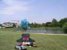
Bon, ce ne sera pas pour cette fois, il est bien passé à 50 cm au-dessus de l'eau...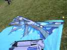
La turbulence et le vent augmentent de façon inquiétante, les Révos de Hugo sont par terre !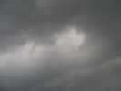
Mais le cyclone arrive sur nous, on voit son oeil qui tournoie dans la noirceur environnante !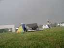
Et le déluge s'abat sur Brie, en même temps qu'un vent qui manque de décoller les barnums de l'organisation !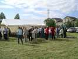
Bon, ce n'est pas en tournant 2 heures de plus au même endroit que je le retrouverai. Gardons le moral, j'assiste au pot final, je reste quand même à l'Orangina, il faudra conduire jusqu'à la maison, pas le moment de plonger dans l'alcool...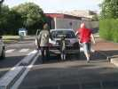
Je ne suis pas le seul à être embêté, la voiture de Jean-Claude ne démarre pas ! Heureusement, il y a 3 costauds pour la pousser jusqu'au garage Citroën.